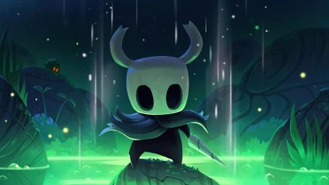

Descripcion
Es un juego donde controlas un caballero pequeño que explora un mundo subterráneo oscuro lleno de insectos. Tienes que luchar contra enemigos, subir de nivel y resolver el misterio del reino. El arte esta hecho a mano y se ve increible. Es bastante dificil pero muy satisfactorio cuando lo logras.
Desarrollador
Team Cherry
Por que esta en el top 10?
Porque el mundo es enorme y hay secretos en todos lados. Ademas es muy barato y tiene muchisimas horas de contenido.
Informacion rapida
Ano de lanzamiento: 2017
Genero: Acción / Plataformas
Desarrollador: Team Cherry
Celeste →